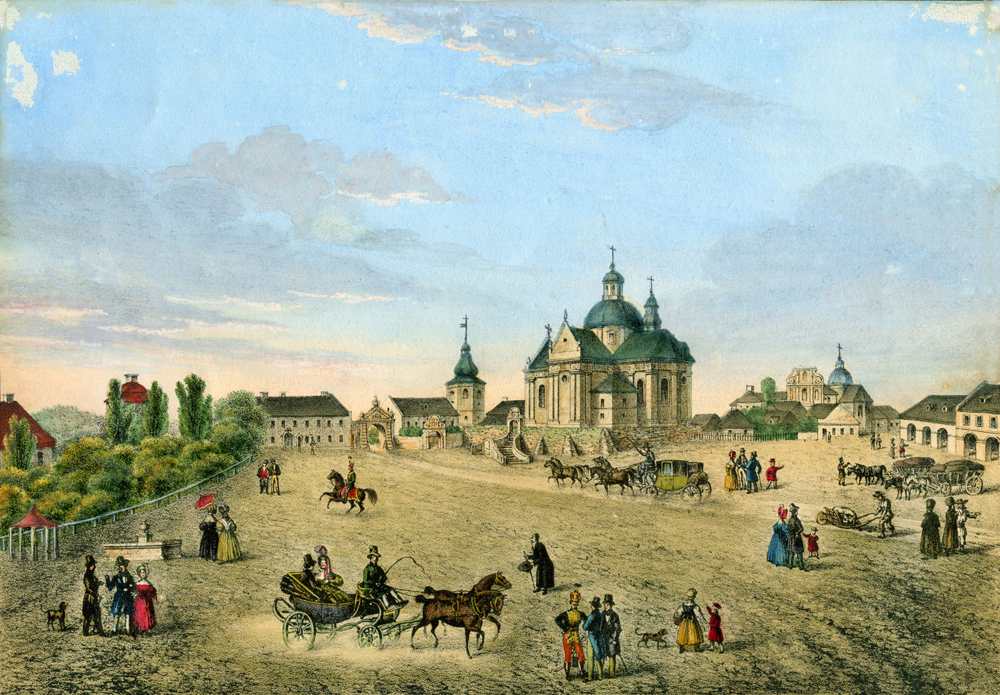

Доброго дня! Мене звати Оксана Біловус.
Ласкаво прошу на мій персональний сайт. Дещо про себе. Народилася і проживаю в м.Жовква Львівської області.
Працюю в галузі будівництва. Місто де я народилася - історичне. Ходять легенди,
що тут своє дитинство провів сам Богдан Хмельницький.

Щоб краще ознайомитись з містом,
зайдіть на сайт.